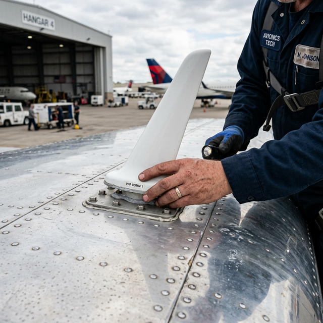

Antennas & RF safety basics
Module Objectives
- Identify the five critical inspection points for any VHF communication antenna.
- Explain the physical hazards of RF radiation on the flight line.
- Define SWR and its impact on transmitter efficiency.
Why Does This Matter?

A technician is hastily replacing a weather-damaged VHF comm antenna on a regional jet. They bolt the new antenna to the roof, hastily torque the BNC coax connector, and do a quick 30-second radio check to the tower—it sounds crystal clear. They skip the required SWR measurement to save time. Six months later, the aircraft returns squawking intermittent comm dropouts at a distance. The culprit? Hidden corrosion at the antenna base had severely degraded the ground plane connection, driving the SWR through the roof and bleeding off 40% of the transmitter's power as wasted heat. Measuring the SWR post-install would have caught the glaring impedance mismatch instantly.
What You Need To Know
Comprehensive VHF Antenna Inspection
An antenna is the absolute most structurally exposed avionics component on the aircraft, taking relentless abuse from 500-knot winds, hail, and extreme icing. A thorough phase inspection requires five strict checks:
- 1. Physical Integrity: Inspect the fiberglass or composite shell for micro-cracks, deep erosion, or structural delamination.
- 2. Mounting Security: Grab the antenna firmly—there should be absolutely zero wobble. Loose antennas vibrate violently and quickly tear massive holes in the aluminum skin.
- 3. Connector Torque: Verify the coaxial BNC/TNC connector at the base is completely seated and biologically sealed against moisture.
- 4. Coaxial Health: Follow the cable run inside the fuselage to ensure the coax is not violently kinked, crushed by cargo, or weeping internal water.
- 5. Corrosion and Ground Plane: An antenna must violently bond to the bare aluminum airframe to utilize the skin as the "bottom half" of the antenna (the ground plane). Severe corrosion between the antenna base and the skin destroys this electrical mirror, crippling performance.
RF Radiation Safety
Radio Frequency (RF) energy is invisible, non-ionizing radiation. While it won't cause cellular mutation like X-rays, high-powered RF massively vibrates water molecules in human tissue, causing deep internal heating (exactly like a microwave oven).
- The Absolute Rule: Never stand near, touch, or inspect an antenna while the transmitter is energized.
- This applies critically to high-power systems like HF radios, weather radar, transponders, and DME.
- Always physically pull the system circuit breaker and hang a highly visible lockout tag before climbing onto the fuselage near an antenna cluster.
Impedance and SWR (Standing Wave Ratio)
For a transmitter to push its full rated wattage (e.g., 16 watts) into the atmosphere, the entire electrical pathway—the radio, the coax cable, and the antenna—must mathematically share the exact same impedance (historically 50 Ohms for aviation VHF).
- SWR (Standing Wave Ratio): This is the ultimate metric of antenna health. It measures how much power actually radiates into the sky, versus how much power violently reflects back down the cable into the radio due to an impedance mismatch.
- A perfect system has an SWR of 1:1 (100% power radiated).
- An SWR above 3:1 means severe power loss and the reflected energy is literally cooking the transmitter's final amplifier stage. Always use a calibrated SWR meter to scientifically prove an installation.
System Visualization
graph TD
A[VHF Comm Radio 16W Output] -->|Coax Cable 50 Ohms| B{Antenna Base Connection}
B -->|Corroded Ground Plane - High Impedance| C[Impedance Mismatch occurs]
C --> D[Massive power reflects back down the coax - High SWR]
D --> E[Transmission range drops by 50% - Amplifier overheats]
B -->|Clean Bare Aluminum Bond - 50 Ohms| F[Perfect Impedance Match]
F --> G[100% of power radiates into atmosphere - Low 1:1 SWR]
G --> H[Crystal clear comms at 200 miles]
style E fill:#991b1b,stroke:#7f1d1d,stroke-width:2px,color:#fff
style H fill:#166534,stroke:#14532d,stroke-width:2px,color:#fff
On The Job
When replacing an antenna, absolutely ensure you aggressively clean the footprint on the fuselage down to bright, shiny aluminum to guarantee a flawless ground plane connection. Immediately after installation, seal the edges perfectly with aerodynamic sealant to prevent capillary water action from dragging corrosion under the base. Finally, never sign off an antenna installation based solely on a short-range radio check to Ground Control; you must connect an SWR/Wattmeter inline to scientifically prove the impedance match is sound.
Reference Terms
VHF antenna inspection items
Regular VHF antenna inspection: (1) physical condition — no cracks, chips, or broken base; (2) secure mounting — no looseness; (3) connector tightness — coax connector properly torqued; (4) coaxial cable condition — no kinks, chafing, or water infiltration; (5) no corrosion at base or connector.
RF radiation safety
Radio frequency (RF) radiation from transmitting antennas can cause tissue heating, eye damage, and interference with medical devices at close range. ALWAYS de-energize the transmitter before working on or near the antenna. This applies to all RF systems: VHF comm, transponder, DME, ADS-B.
Coaxial cable replacement — critical steps
When replacing coax for a VHF antenna: (1) use correct impedance cable (50Ω for VHF comm), (2) use correct cable type/spec for the run length and environment, (3) install connectors properly — correct preparation, crimping, and torque, (4) measure SWR (Standing Wave Ratio) to verify the installation.
Intermittent comm audio — common causes
Three most common causes of intermittent or noisy comm audio: (1) loose or corroded connector (high contact resistance causing noise), (2) damaged coaxial cable (bent, kinked, or crushed center conductor), (3) failing microphone jack (worn or oxidized contacts causing noise when moving).
Ground Plane
The massive conductive surface (the aluminum aircraft skin) beneath a VHF whip antenna that acts as the required electrical second half of the dipole.
SWR (Standing Wave Ratio)
The critical numerical ratio measuring the efficiency of an antenna system; indicating how much power radiates vs. how much violently reflects back.
Impedance Mismatch
A destructive electrical condition where components of unequal resistance (like a corroded connector) cause massive signal reflections and power loss.
RF Safety Barrier
The mandatory clearance zone around active transmitting antennas to prevent severe internal tissue heating from high-power electromagnetic radiation.
Assessment Check
Inspect antennas methodically for structural security and base corrosion, always de-energize the transmitters to prevent RF tissue burns, and definitively utilize an SWR meter to scientifically validate your 50-Ohm impedance match. --- ---